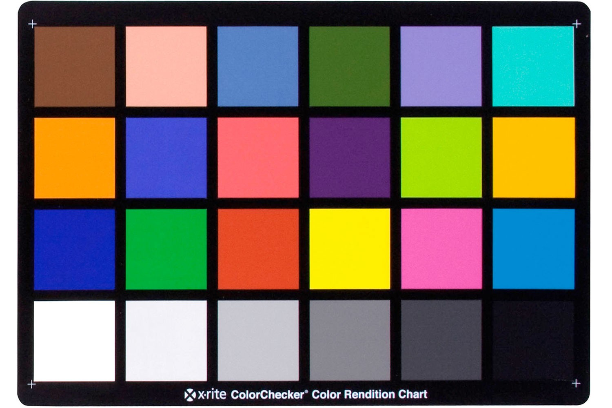
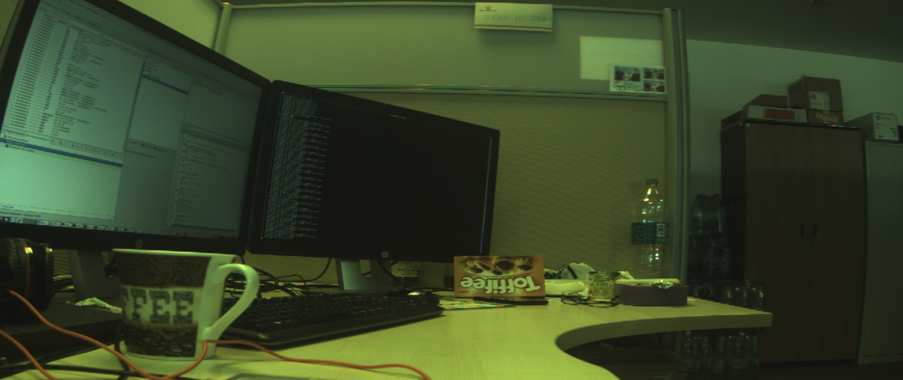
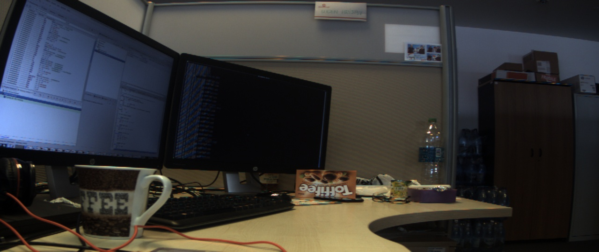

Image Sensor Controller White balance features
These features are available and apply only for the Atmel Image sensor controller . They do not apply for the Image Sensor Interface.
Introduction
White balance is a type of adjustment that will modify the colors in an image such that the colors are adjusted to the type (temperature) of the ambient light of the scenery. Our human eye automatically adjusts to the ambient light, such that the colors look natural in our brain. For example, if we look in neon light, everything is more blueish, but, our brain adapts and sees the "red" as "red", even if the color is actually different. The sensor cannot do the same adjustment. The sensor will have some kind of default settings for the colors, which can be changed inside the ISC to adapt to the ambient light. The purpose of the white balance feature is to automatically adapt to every possible light scenario. Light sources have a different color temperature , starting from around 2500K up to 7000K. The lower temperature corresponds to yellowish/reddish type of light, while higher temperature corresponds to blueish light. This actually comes from the temperature of the light bulb that will light the scenery.How to adjust colors
For RAW bayer sensors, we have 4 color channels: Red, Green-on-red, Blue, Green-on-blue, which we will name R, GR, B, GB. This is how Bayer format works. So we have 4 different color channels, one red, one blue and two green. Each of these channels can be adjusted in terms of gain and offset. The Gain is a multiplication factor while the offset is an addition factor. The ISC allows us to program these values and adjust in hardware each color channel of the BAYER format.Using histogram and Grey world and stretching algorithm
To adjust the gains/offsets for our color channels, we will use the following axiom: If we picture a grey colored scenery, regardless of the ambient lighting, the average color must be grey. Grey means that all the 4 channels have the same weight inside the average of the scenery. If one color dominates, then we have a wrong white balance situation: grey is more reddish , blueish, greenish than it's supposed to be: that is, grey. To achieve this, we need to take a sample photo of either a grey card/color checker card, or of a scenery that on average is grey (meaning that there is no dominant color, it does not work if we picture a red box for example). Best results are achieved using a grey card or color checker card (which averages on grey if pictured as a whole). A color checker card can be seen below:  The histogram will help us with computing the colors: the histogram will add up all the pixels for each channel, with their corresponding pixel value. This means that the histogram will count how much red is in the image, how much blue is in the image, etc. After we obtain the histogram, we need to compute the gain to adjust the channels which are lower. We will consider the green channels as fixed and compute gains for red and blue channels. Histogram stretching will apply additional gain/offset to make the histogram stretch over all pixel values, to avoid dead areas in the histogram: if that would happen, would mean that instead of 8bit or 10bit resolution for the colors, we have less, which is not desired.Support inside the atmel_isc driver
Auto white balance feature
By default, the ISC driver will do "auto white balance" . This means that every 4 frames, while streaming is running, the driver will adjust the white balance to the scenery in front of the sensor.
User Controls
brightness 0x00980900 (int) : min=-1024 max=1023 step=1 default=0 value=0 flags=slider
contrast 0x00980901 (int) : min=-2048 max=2047 step=1 default=256 value=256 flags=slider
white_balance_automatic 0x0098090c (bool) : default=1 value=1
do_white_balance 0x0098090d (button) : flags=inactive, write-only, execute-on-write
gamma 0x00980910 (int) : min=0 max=2 step=1 default=2 value=2 flags=slider
To disable auto white balance feature:
# v4l2-ctl --set-ctrl=white_balance_automatic=0When the auto white balance is disabled, the gains/offsets are static and not changed. To enable the auto white balance:
# v4l2-ctl --set-ctrl=white_balance_automatic=1
One time white balance adjustment
This feature means that the user can do a one time adjustment when the scenery respects the Grey world assumption and set in stone the coefficients. The feature is a button-like control: give the command, and the white balance is adjusted. If this is done while auto white balance is enabled, it will work, of course, but the auto white balance will adjust again in the next frames, so we cannot obtain anything useful. To try this feature, the streaming must be enabled. The sensor must be streaming data . This is needed because we need to compute the histogram, and we need data for it (a real frame from sensor). If the streaming is not enabled, the command will be ignored and no white balance adjustment will occur. Thus, if streaming is disabled, the control will appear as inactive in the list of controls. The recommended way to test this feature is:- Enable streaming first (this can be done with gstreamer for example, either put the image on the LCD, or to a fakesink ). When streaming is enabled we can see the control is now active:
User Controls brightness 0x00980900 (int) : min=-1024 max=1023 step=1 default=0 value=0 flags=slider contrast 0x00980901 (int) : min=-2048 max=2047 step=1 default=256 value=256 flags=slider white_balance_automatic 0x0098090c (bool) : default=1 value=1 do_white_balance 0x0098090d (button) : write-only, execute-on-write gamma 0x00980910 (int) : min=0 max=2 step=1 default=2 value=2 flags=slider - Disable the auto white balance feature (if enabled)
# v4l2-ctl --set-ctrl=white_balance_automatic=0
- Carefully place the color checker card in front of the camera such that the whole checker card and nothing but the checker card is captured in the frame.
- Issue:
# v4l2-ctl --set-ctrl=do_white_balance=1
- White balance one time adjustment is completed once the Linux kernel informs you:
[ 5566.890000] atmel_isc f0008000.isc: Completed one time white-balance adjustment.
Example
Below we can see a photo before and after white balance adjustment:  | WebFaqBaseForm | |
|---|---|
| Boards | Sama5d27WLSom1EK, Sama5d27Som1EK, Sama5d2Xplained |
| Components | Kernel, linux-4.19-at91, linux-5.4-at91 |
| Summary | White balance features of the Image sensor controller. |


| I | Attachment | Action | Size |
Date | Who | Comment |
|---|---|---|---|---|---|---|
| |
8RGGB_bef.jpg | manage | 148.6 K | 2019-04-23 - 12:13 | EugenHristev | |
| |
8RGGB.wb..jpg | manage | 154.9 K | 2019-04-23 - 12:13 | EugenHristev | |
| |
xrite-msccc_1.jpg | manage | 181.5 K | 2019-04-23 - 11:55 | EugenHristev |
r4 - 02 Jun 2020 - 07:00:15 - EugenHristev

{kind=link}
{kind=link}
{kind=link}
{kind=link}
{kind=link}
{kind=link}
Copyright © by the contributing authors. All material on this collaboration platform is the property of the contributing authors.
Linux® is the registered trademark of Linus Torvalds in the U.S. and other countries.
Microchip® and others, are registered trademarks or trademarks of Microchip Technology Inc. and its subsidiaries. 
Arm® and others are registered trademarks or trademarks of Arm Limited (or its affiliates). Other terms and product names may be trademarks of others.
Ideas, requests, contributions ? Connect to LinksToCommunities page.